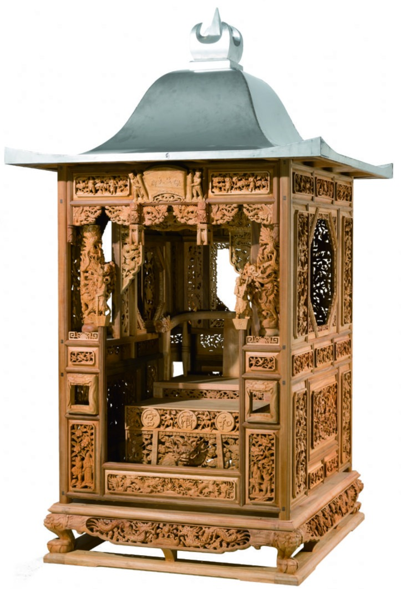
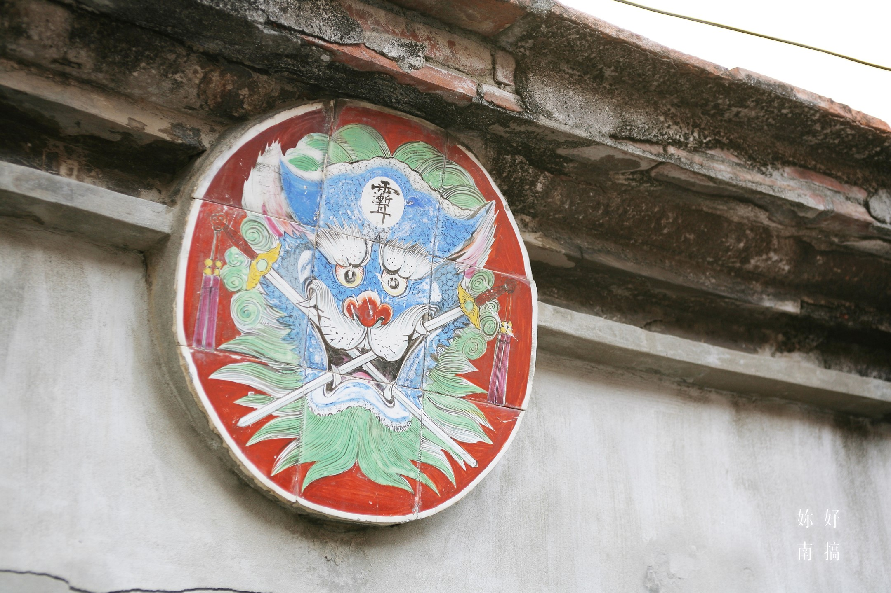

從府城舊事到常民記憶
本數位典藏專案聚焦於台灣歷史起點——台南。透過整合傳統神轎工藝、近代摩登地標與安平海港的建築殘跡，試圖跨越時間的洪流，為常民生活與無形文化資產留下可供追溯的數位印記，建構府城立體的集體記憶。
開始啟程
| Title | 台南神農街「永川大轎」傳統木作神轎工藝紀錄 |
| Creator | 王永川（永川大轎創始人）及其傳人 |
| Subject | 傳統木雕、神轎工藝、民間信仰、五條港文化 |
| Publisher | 數位典藏管理課程期末策展 |
| Date / Type | 2026 / Physical Object |
| Identifier | Tainan-CH-001 |
| 文資類別 | 傳統工藝 / 無形文化資產保存技術 |
選擇理由與典藏價值： 神轎工藝結合了木雕、鑿花、漆藝與傳統力學，是台南府城迎神賽會文化中不可或缺的工藝結晶。隨著現代機械化生產普及，純手工鑿刻的神轎日益稀少。典藏此物件與其製程，不僅是保存一項國家級重要傳統工藝技術，更能透過神轎的紋飾，展現台南獨特的民間信仰生態。
精選在地優質木材（如樟木），依神轎部位進行精準材切與乾燥。
Title: 1930年代台南末廣町市街與林百貨歷史影像
Source: 轉錄自國立臺灣歷史博物館典藏數位開放資料
Coverage: 台南市中西區中正路（舊末廣町）
文資類別: 歷史照片 / 近代都市生活史料
選擇理由： 林百貨是台灣歷史上第二家、也是中南部第一家百貨公司，配有當時極為罕見的電梯（流籠）。這張老照片見證了台南在日治時期走向現代化都市發展與摩登生活風格的起點。透過數位典藏，能與當前林百貨的古蹟活化進行古今對照，具備極高的城市空間變遷與社會文化史研究價值。

Title: 台南安平舊聚落蚵殼灰糯米牆與泥塑劍獅殘壁
Identifier: Tainan-AR-003
保存現況: 瀕危（受都市更新與自然風化影響，正迅速消逝）
請點擊左側圖片中的熱點數字，即可顯示先民就地取材的低碳工法與民俗心理細節說明。